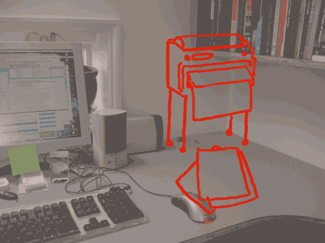

If you haven’t read the story, Spimes: A Happy Birthday Story, you should go and read that or download the eBook.
Then this will make a lot more sense.
That story was written at the end of 02012 at the ClearLeft hack farm as one of the potential projects. Brian Suda and Mike Stenhouse laid out a potential day in the life in the near future for our protagonist. We pulled from many sources, some of which were our ideas, but many of which we saw in other formats and melded into this story.
If you think some of the ideas are too crazy and out there, maybe some of the following links will demonstrate that these ideas are closer than you might think.
Years before BergCloud released their Little Printer, they were talking about the social letterbox. One of the many events we regret not attending was PaperCamp in London back in 02009. That is where the microprinter, a connected receipt printer, made its first appearance. This is the seed for the Little Printer and the source of the birthday cards in the story.
Maneki Neko, By Bruce Sterling, is a great short story. It revolves around a karma, gift economy and a small device which allows its owner to send and receive messages. If you have faith in the device, it will ask you to conduct some pretty strange tasks, but in return many of your needs and wants are also rewarded. Simple acts like buying and extra coffee because it tells you too, and within a few minutes it tells you whom to give it too. Then randomly one day when you are sitting on a bench tired and sad, someone will had you your favorite drink. Some of the ideas behind the peer-to-peer postman came from this story.
The direction guiding shoes is a riff on the haptic belt or haptic compass. These belts are used in military and civilian scenarios to help the wearer get a better sense of their location and heading. They are made-up of a series of gyroscopes and a digital compass. Which every way is north, that gyroscope quietly buzzes. As you turn your orientation, a new gyroscope will buzz, but always the north-facing side. As we see more and more sports companies becoming technology companies, I wouldn’t doubt we’ll see this feature is a high-end running shoe in the future.
The Roomba is probably the most futuristic consumer good we can buy today. A small robot that cleans your house while you are away. Packed full of basic, cheap sensors, this device knows when it is hungry for power and returns home. Our bean device is the simple extrapolation of what the roomba could become with even more smarts and a few arms and legs.
If you haven’t read Dan Hill from City of Sound’s, The street is a platform, you really should. It is from 02008, but still every bit relevant. Again, it looks at all the sensors around us and how the city street could become a platform of sensors we can tap into to get environmental information.
Dollar Shave Club and Manpacks are both subscription services for bachelors and lazy men. Frequent renewals of personal toiletries and cloths. This influenced some of the thought behind the SPIMES reporting themselves old and in need of replacement, but also the after-death candy subscriptions.
London’s Boris Bikes played a small role in the way our protagonist gets to work. A while ago, when the early iPhones came out with their GPS location ability. Mike and Brian attempted to create a few small HTML apps around finding the nearest station and “adopting” a bike. You could see the bike’s history, etc. It was a mash-up idea of FourSquare gamification badges and Adopt a Fire Hydrant. We wanted to further explore this in the story. There is still a lot of potential and Spime-y stuff you can do with shared resources like bikes and mass-transit.
The other major mode of transport described in the story was the on-call bus network. We might think of this as impractical or some utopian future, but there is a company Leap Transit, testing such a service today. It will be interesting to see how and where this technology leads. In the early days of fire departments they were private firms who only extinguished house fires of their customers. Eventually, these private companies became part of the public network. As private bus and other transport companies avoid picking-up their non-customers or non-smart-phone users, what will happen? Will alternatives appear, will the public sector catch-up or a proliferation of competition?
Google Traffic and Google Now have some minor notions of traffic patterns and load balancing. It can advise you on alternative routes if there is congestion on the roads you normally take. As this becomes more and more successful, it will begin to be applied to other services too. We already see this will electricity. The “smart grid” has different rates for peak and low usage times for electricity and meters it accordingly. This will eventually be applied to just about everything from water and food to vacation plans and desk allocation in large work places.
In the story, when the protagonist is finding a desk, he is using the resource management tool, but also then looking for his boss and co-workers. Once he selects a spot he claims it and loads all his preferences. Some of these interaction ideas were gleaned from Apple’s Find a Friend app. With permission, you can see where your friends currently are located as well as set triggers. If a spouse enters or leaves a geofence around your house, you are sent a message. The same idea could easily be extended to all employees of a company and a company specific tool. Along with that Dodgeball/Foursquare layered on the concept of checking in or claiming a space. These actions set off other triggers which ordered him some coffee. According to the Valve Employee Handbook, all their office desks are on wheels. This allows the team to form their own clusters and ad hoc teams. Using their wiki, you can find team member locations. It is a lower-tech version of what we describe in the story.
The Quantified Self movement is taken to an extreme in this story. All parts of the protagonists life are monitored and measured because he opted into the cheaper health care system. His exercise and calorie intake are measured and appropriate portions vended to him. In a spime world, where everything you interact with is recorded, interactions and measurements like these become more and more common because the difficult to record and save the data approaches zero effort. The work of both Kevin Kelly and Timothy Ferriss were influences on the way we thought about tracking in the future. They have been key in getting the Quantified Self movement started as well as personal tracking and hacking the way we live.
In the story we briefly mention the office desk phone and how it can morph into various shapes which can be in-app purchases. The thought behind this stems from the experimental MIT Amazing Magic Morphing Table.
You can see the columns extrude to various heights. With a more fine grained pins, you could make even more impressive and interactive physical objects. This could emulate various fashion and personalize office devices such as the phone.
Bumptop was another inspiration for our cubical of the future. All the files and desktop workspace is virtual, but with touch you can interact with the items. Depending on the file size the virtual icon had different physics. The bigger the file the harder it was to push around. This interactivity and ability to mix virtual and real physics is an interesting concept.
One of the topics we are also fascinated with is social media after death. It is something we’ll write about another time, but with all the data exhaust we are producing, even simple Markov Chain algorithms could build our next most likely tweet. As the technology gets even better, it will become harder and harder to distinguish computer from person. There are services out there now, LivesOn is a service that tweets after your death. For those who remember MySpace, there was a movement to create online memorials. These acted as a virtual tombstone for others to gather. Life Online After Death is an interesting article looking at one instance at how, even after death, people were still communicating on MySpace as if the receiver was still alive.
In the story, we have the deceased grandfather call from the grave. Not only to demonstrate how this technology works, but also how the listener doesn’t see through the fake veil of reality, only when they are rude or something technically goes wrong does it snap you out of the fantasy and back into reality.
Around the topic of death, there are several other interesting technologies. The Voicemail grave stone, patented under the term Video Enhanced Grave Marker. This allows the deceased to leave a video message for the living appearing before their gravestone. It is a creepy and interesting concept. The same could easily be extrapolated to the front-door. People coming to the door could easily leave a video or audio message. Even today, we have home made, off-the-shelf parts to create a system that sends you a picture to your phone when the door bell is rung.
If you haven’t read or seen Adam Greenfield’s book Everyware, then you should get your hands on a copy. It might be 8 years old now, but the concepts are still very powerful. It revolves a lot around sensors and how to report their existence and what they are recording and storing. As ubiquitous computing and tracking become more and more a reality, we need a vocabulary to describe what’s happening. This book is the best first attempts at this and influenced how we wrote our story.
dConstruct Conference
The dConstruct conference is also a great resource for some of the references through the story. Every year the dConstruct conference brings incredibly high-calibre topics. A few sessions over the last few years have been jumping off points for learning more about the Internet of Things, our social interactions, how screen everywhere will change the way we live. These are just a select few of the audio files we recommend you listen too.
- 02009 Russell Davies: Materialising and Dematerialising A Web of Data. (Or What We’ve Learned From Printing The Internet Out)
- 02011 Kevin Slavin: Reality Is Plenty
- 02012 Scott Jenson Beyond Mobile: Making Sense of a Post-PC World
Scott Jenson has written about why Mobile Apps Must Die. It is an interesting read because in our future we can’t install a specific app per tiny use-case. Interoperability, development costs, maintenance all become too complex and expensive. A single lingua franca is needed and his argument is that apps aren’t it.
Nearby communications technologies
We were promised Jet Packs and all we got were new forms of barcodes. We’ve written about QR codes and other various 2D barcodes before. We love the idea of physical reality hyperlinks, but we also have to come to the conclusion that 2D barcode aren’t the answer. We also wrote about what 2D barcodes aren’t in an attempt to point out their failure.
Yet we are being offered more and more of these similar technologies. “Get your phone close and it will do something”. Great, I don’t care or need another app running. Kevin Slavin talks a bit about this in Reality is Plenty. We have NFC (Near field communication) which was suppose to solve the problem of getting your wallet out and paying with credit cards. The concept behind NFC was always sold as a convenience to the users, but in reality it is something much more interesting. As pallets of product zip around a warehouse and between transport networks they are tracked. Usually actively through scanning barcodes. With NFC it can be much more passive. As objects pass through the loading bay doors they are scanned with no effort through the use of cheap RFID chips.
The next generation and promise of easy shopping is now called iBeacons. It is a similar technology to NFC, but uses Bluetooth. For lack of any imagination, we see iBeacon examples which explain how smart phone uses will enter a shop (assuming they launched the specific app for that shop) and be prompted with tailored deals, directions to items on their wish list and even maps of the store. This is our first generation spime reader. Our smart phones are talking to the tables in the shop, they talk to the PoS system for payment, they connect with the web and know our history.
Time will tell where the smarts reside, on the dump lump of wood called a table or online in databases which are accessed via that table. While things like QR Codes are horribly implemented and laughed at, NFC and iBeacon have surpassed them in their banality and advertising. These are actually the first steps into our spime driven world. We tried to address some of this through out the story, like the bike knowing he dropped his phone or passively clocking in and out of work simply by passing through the building’s front door.
Finally, some of the more dystopian views of our near future where everything is connected, broadcasting and interactive, Keiichi Matsuda created a series of awe inspiring videos.
Domestic Robocop
Some of the interactions in this video are similar to what we described as our protagonist searches for his lost ‘work’ items before leaving for his morning commute.
Augmented City 3D
This is an interesting look into potential interfaces and how we interact. This isn’t directly connected with spimes, but as more and more items have a history and are recording themselves in space and time, we will need a way to activate and inspect them. Some of these ideas might seem crazy and far out, but right now we’re just teething, learning what works and what doesn’t. This isn’t some fictitious look at the future, it’s an attempt to poke around the edges and discuss what work.
Skipped Topics
In looking at a near future scenario, we didn’t want to get bogged down with every possibility. It wasn’t a conscious decision, but we didn’t touch on many hot topics which are certainly creating change. Social media is one topic which is a buzz-word filled hornets nest of a topic. The way we interact with one-another is changing so much that any near future prediction probably wouldn’t be crazy enough. With services like Facebook being the dominant player a few years ago, to upstarts taking a similar, yet different approach like SnapChat. Both are social networks, but one focuses on knowing everything all the time, while the other is all about the ephemeral. Predicting what will be next probably wouldn’t be abstract or strange enough and we wanted to avoid getting into the trope of “using your social network to find a good place to get a pizza”.
Another topic dear to many speculative fiction writers is the 3D printer. Why not just print it! Should the bean even clean anything or should it round-up all the cutlery and plates and dump them into a chipper which grinds down everything into a grey goo which is feed back into a 3D printer and makes new, possibility updated and better cutlery before dinner time. 3D printing has the possibility to really change many aspects of the future and it wasn’t something we focused on in this story.
Finally, food! The way we eat won’t change much, but molecular gastronomy is only in the early phases of what it can do. We could have had our protagonist, or the bean, start cooking meat at 7am in a sous-vide machine and slow-cook it all day. Depending on how crazy we wanted to go, we could even predict 3D food printers which need cartridges of pro tines squirted out in various combinations to build-up dinner. That would turn the local food movement into hyper-local. Then there is in vitro meat, grow it at home in your own petri dish.
There are plenty of other topics we didn’t focus on in this story, but may revisit in the future.